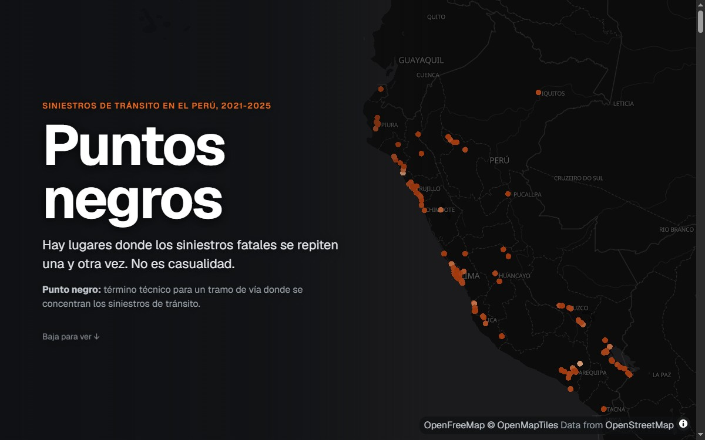

Python · ONSV · OpenStreetMap
Puntos negros en las vías del PerúBlack spots on Peru's roads
Pregunta. ¿Dónde se repiten los siniestros fatales y qué tienen en común esos lugares? Question. Where do fatal crashes keep happening, and what do those places share?
Resultado. En 286 tramos de 200 metros murió 1 de cada 9 fallecidos entre 2021 y 2025. La mitad fueron atropellos, muchas veces cerca de un paradero. Result. 1 in 9 road deaths between 2021 and 2025 happened on 286 stretches of 200 meters. Half were pedestrians being hit, often near a bus stop.